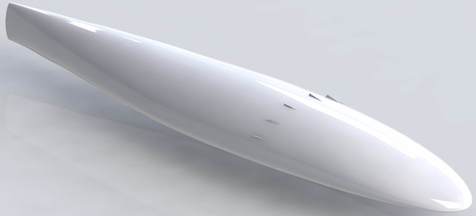
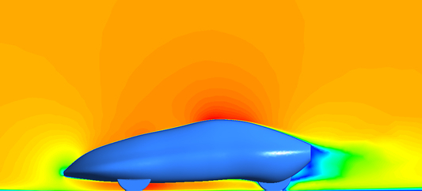
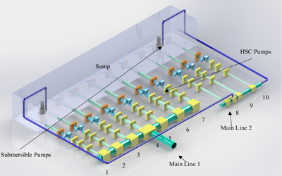
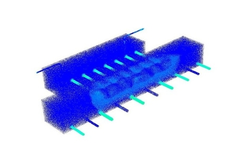
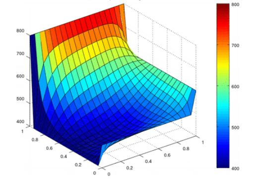

Computational Fluid Dynamics Lab
Delhi Technological University
The Computational Fluid Dynamics Group is based out of Delhi Technological University. Delhi and includes academics, industry professionals, and students who perform CFD simulations on problems spanning a wide range of fields. Through an innovative and interdisciplinary approach, we aim to apply the fundamentals of fluid mechanics and thermal engineering to practical situations and come up with pragmatic solutions through computational tools. Prof. B.B Arora is the Principal Investigator of the Lab.
Projects
-
Computational Evaluation of a Novel Aerodynamic Road Vehicle Design and Drag Reduction using Vortex Generators
Collaborators - Ujjwal Suri, Utkarsh Garg, Shraman Das
Drag is a phenomenon where a low-pressure area is created behind a moving body in a fluid due to flow separation. Not only does drag reduction help in attaining higher top speeds but, more importantly, also in economizing fuel usage. Lower values of coefficient of drag give us better design for fuel economy. Fuel economy is important because, in a modern world where most machines are run directly on fossil fuels or energy generated by the combustion of fossil fuels, the preservation of these fuels is important, and the pollution caused by burning or spilling of these fuels have a severe negative effect on the surroundings and our atmosphere overall. For any general body, Reynolds Number is used to predict where the transition from streamlined to turbulent flow will occur and where the laminar boundary layer becomes a turbulent boundary layer. These results help to identify where the separation of flow will take place, and vortex generators can be used to delay this so as to reduce the effect pressure drag being created. Vortex generators create strong tip vortices that energize the boundary layer and therefore help in keeping the flow attached. In the proposed experiment, the aim is to design and evaluate a specific vortex generator that can be used in an airfoil or hydrofoil in the same way to give the same result of drag reduction.
Fig. CAD model of the vehicle
Fig. Velocity contour of flow around vehicle
-
CFD Analysis of Balawala Pump House, Public Health and Engineering Department, Jaipur, Rajasthan, India
Collaborators - Vishesh Kashyap, Sourajit Bhattacharjee
The industrial consultancy project was aimed at the installation of submersible pumps inside the existing sump in a way they don’t interfere with the working of old centrifugal pumps. Regions of turbulence were identified, and the location for new pumps was suggested to increase the water supply to meet the city’s growing demand. The first phase of the project was to prepare the CAD models of Centrifugal Pumps and Sump, and for this, SolidWorks was used. The second phase involves the design validation of the CAD model, and for this, the Centrifugal Pumps were simulated using ANSYS Fluent using the sliding mesh approach, and the results were then compared with the performance characteristics provided by the manufacturer. In the third phase, whole water network Reservoir's sump, puddle pipes, main sump, centrifugal pumps were simulated and to account for multiphase (Air & Water) Volume of Fluid model was used, and the possible locations for new submersible pumps were suggested so that they don't interfere with old centrifugal pumps and don't cause issues like suction cavitation.
Fig. CAD model of the pump house
Fig. Velocity distribution of flow
-
1-Dimensional Navier Stokes Solution using Maccormack technique for Compressible Flows
Collaborator - Utkarsh Garg
- Numerically solved Quasi 1D Subsonic-supersonic Isentropic Nozzle Flow using the MacCormack’s Method
- Computer Code was written to solve both conservation and non-conservation form of equations.
- Implemented Courant Number based time step control and effect of varying Courant numbers was studied.
- Grid dependency study was performed.
Fig. Variation of non-dimensionalised flow variable with nozzle length in (a) conservation
and (b) non - conservation form of governing equations
-
Solution of Unsteady and Steady Heat Conduction Equation for a 2-Dimensional Grid
A Computer Code was written to Solve 2D Heat Conduction equation.
- Implemented Jacobi, Gauss-Seidel and Successive Over-Relaxation iterative methods are used for steady part.
- Implemented Implicit and Explicit methods to solve the transient part.
- Von Neumann Stability Analysis was performed to determine CFL number.
- Implemented CFL number based time step control.
Fig. Spatial distribution of temperature in computational domain